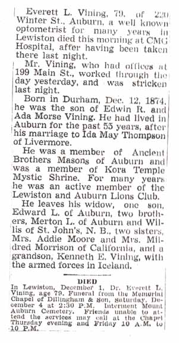
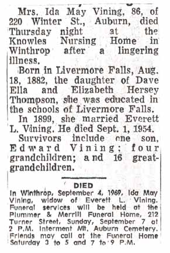
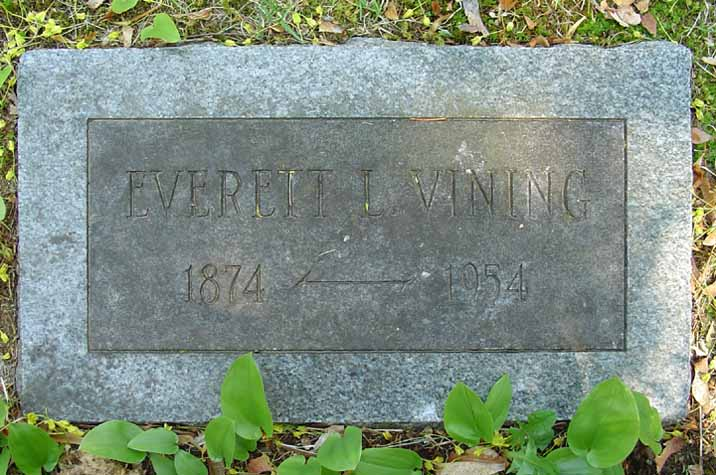
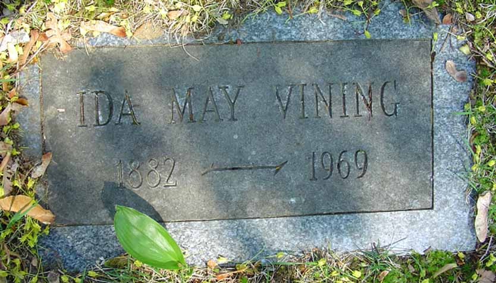

Documentation for Everett L. Vining - Ida May Thompson
Death Data
Obituaries for Everett L. Vining and Ida May (Thompson) Vining and their gravestones, in the Mount Auburn Cemetery in Auburn, Androscoggin County, Maine:




Gravestone for Kenneth T. Vining, son of Everett L. and Ida May (Thompson) Vining, in the Mount Auburn Cemetery in Auburn, Androscoggin County, Maine: